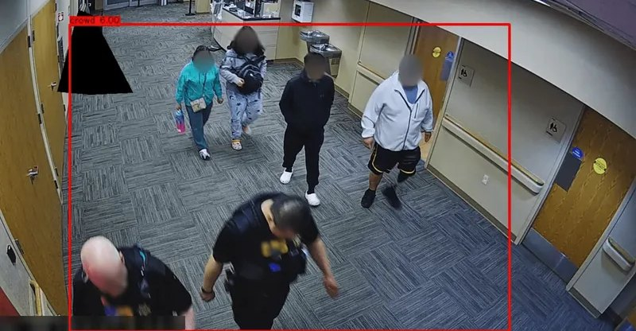

See how crowded a place isbefore it becomes unsafe
VISTA turns the cameras a station, temple or stadium already has into a crowd level for each zone, so staff can act early.
No account? Choose Continue as guest on the login page.
Example camera frame with crowd detection. Faces blurred.
What VISTA does
Three jobs, one system.
Cameras? Counted.
VISTA finds where each person stands on the floor and counts the people inside a zone, using the cameras the venue already has.
Zones? Ranked.
Each zone shows a level (Normal, Caution, Warning or Critical) based on how full it is compared with its capacity.
Venues? Separate.
Every venue admin sees only their own zones and cameras. Security staff see the current level of every zone at their venue.
How it works
From a camera image to a crowd level in four steps.
- A camera watches one zone.For example a railway platform, a temple courtyard or a stadium gate.
- VISTA counts the people inside it.It finds each person's feet on the floor and counts the ones inside the zone's marked area.
- The count becomes a level.The count is compared with what the zone can safely hold, and the zone gets one of four levels.
- Staff see it, and soon get alerts.Admins and security watch the levels on a dashboard. Alerts to staff and visitor phones are in development.
Who it is for
Pick your role to get started.
Security staff
See the current level of each zone at your venue, updated every 2 seconds.
Log in as securityVisitors
Check how busy a venue is before you go. This part shows sample data for now.
Open as a guestProject status
VISTA is a student project. This is what works today and what does not yet.
- BuiltLogin, with separate access for each venue
- BuiltCamera setup and the live zone dashboard
- TestingCounting people from camera video on real footage
- In developmentAlert engine with acknowledgement and escalation
- In developmentPhone alerts and location warnings for visitors
- In developmentEvent registration with QR check-in